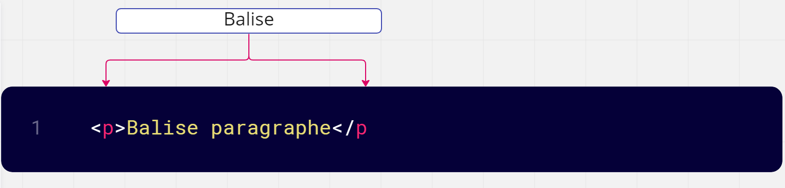
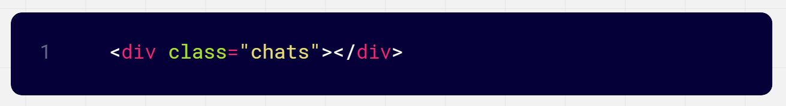
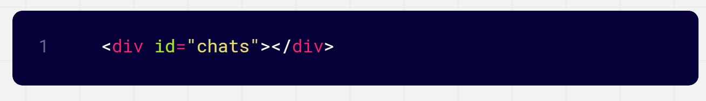
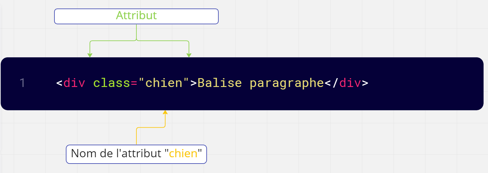

Les bases en HTML
Partie n°1 Les Balises
DOCUMENT :
Pour que le navigateur puisse interpréter notre code, il est nécessaire de définir quelques balises. Voici un gabarit pour débuter.
.jpg)
Ce code affiche une page vide en HTML5, avec un titre et un encodage adapté à nos usages.
Les navigateurs sont assez souples, on peut écrire du mauvais code et obtenir visuellement un bon résultat, le risque étant d’avoir un affichage catastrophique sur certains appareils ou des problèmes pour l’évolution du projet. Vérifier deux fois votre code html avant d’aller plus loin.
balises en HTML :
Pour écrire en langage HTML, on a besoin de balises.
Qu’est-ce que c’est ? Ce sont les éléments de base pour écrire du HTML.
Il en existe
plusieurs:

Pour écrire en html, on utilise des balises, elles délimitent et définissent les éléments. Par exemple, la balise pararaphe:

servira à définir et délimiter un élément paragraphe. La plupart des balises marchent par paire, la première ouvre pour marquer le début, la seconde ferme pour marquer la fin.

Le principe est simple et bien souvent l’éditeur vous aide à l’écriture. Pour répondre à nos besoins, il est bien sur possible d’imbriquer les balises. Certaines balises sont dites auto-fermantes, elles s’ouvrent et se ferment pour définir l’élément, c’est le cas des meta, images et d’autres éléments. La balise strong met en avant une portion de texte, généralement en l’affichant en gras.
les balises plus utilisées :
.jpg)
Partie n°2 Les Div
Tout ce qu’il faut savoir sur le conteneur div :
Qu’est-ce qu’un conteneur div et à quoi sert-il ?
Pour se faire une idée de ce qu’est l’élément HTML div, il suffit de se pencher sur l’origine du
terme. div vient du mot anglais division, c’est-à-dire « section », « division » ou encore «
scission ». Un conteneur div sert principalement de conteneur pour d’autres éléments HTML.
Comment utiliser div en HTML ?
div est principalement utilisé en HTML pour formater des éléments HTML avec CSS qui vont
ensemble visuellement, pour regrouper différents blocs HTML et les positionner de manière claire
ainsi que pour animer HTML, CSS et le contenu à l’aide de JavaScript.
Exemple de Div:
La div class :
A pour attribut "Class"
La div Id:
A pour attribut "Id"
Partie n°3 Les Attributs
Attributs
Dans notre document, la balise meta utilise l’attribut charset suivi d’un signe égale et d’une valeur entre guillemets simples ou doubles, vous avez le choix entre "UTF-8" ou 'UTF-8', si vous avez des guillemets français « UTF-8 » ou d’autres signes, ça ne marchera pas. Les attributs viennent compléter les caractéristiques des balises, veuillez à bien respecter leur orthographe.
Attributs des balises:
Ces balises ont un intérêt uniquement si vous leur associez un attribut class, id ou style: class: indique le nom de la classe CSS à utiliser. id: donne un nom à la balise. Ce nom doit être unique sur toute la page car il permet d’identifier la balise. Vous pouvez vous servir de l’ID pour de nombreuses choses, par exemple pour créer un lien vers une ancre, pour un style CSS de type ID, pour des manipulations en JavaScript, etc.
.jpg)
Style
cet attribut vous permet d’écrire directement le code CSS à
appliquer dans le code HTML.
Cependant, il est préférable de ne pas utiliser cet attribut et de passer à la place par une
feuille de style externe, car cela rend votre site plus facile à mettre à jour par la suite.
Testez chacune des balises pour voir le résultat concret. Les balises sont le squelette du HTML.
Et bien entendu, sans squelette, rien ne tient et par conséquent la page web s’effondre. Vous ne
pourrez jamais faire sans. Faites bien attention à fermer les balises ! En un rien de temps,
vous vous familiarisez Avec le HTML. Il ne vous restera alors
plus qu’à maîtriser le CSS pour donner à vos fichiers HTML la forme que vous souhaitez.
.jpg)
Les erreurs fréquentes sont :
une erreur sur un nom de balise ou attribut, souvent « src » pour source devient « scr » ; une mauvaise imbrication ; la confusion entre « : » et « = » ; le slashe mal placé '/body' et 'body/'ici ; l’oubli de fermeture sur une balise ou un guillemet. Quelques remarques, le code de cet exemple est indenté, il n’y a pas d’obligation mais cela améliore sa lisibilité, vous pouvez l’écrire sur une seule ligne, le résultat sera similaire.
LES COMMENTAIRES :
Les commentaires sont fortement utilisés dans la programmation. Ils permettent de documenter,
d’annoter ou mieux suivre votre travail. Aide-mémoire, to-do-list, crédits, private-joke, notes
de version, séparation visuelle, ou code délaissé, vous trouverez rapidement leurs usages.
< ! -- ceci est un commentaire -->
Gardez bien en tête que les commentaires HTML et CSS sont invisibles dans le navigateur mais
lisibles et accessibles par tous dans les sources.
.jpg)
GRAMMAIRE ET VOCABULAIRE :
Si vous avez bien suivi, vous maitrisez déjà la base de la grammaire du HTML, il ne vous manque que le vocabulaire pour vous exprimer pleinement. Comme dans toute langue, il existe des mots fréquents, rares, désuets et même nouveaux. Si vous voulez apprendre un langage, il faudra obligatoirement pratiquer, parler ou lire celui-ci. Vous trouverez en ligne de nombreux exemples didactiques, tous ne sont pas bons, sans erreurs ou actualisés. Vous avez aussi la possibilité d’inspecter n’importe quel site web à l’aide des outils de votre navigateur. Il existe de nombreuses références de qualité pour apprendre le vocabulaire du HTML, citons le site du W3C et le site MDN de Mozilla (https://developer.mozilla.org/). Les manières de baliser un document web sont infinies, elles sont dépendantes des besoins et du planning du projet. Notez aussi que les moteurs de recherches influencent aussi certaines pratiques.
CONCLUSION :
En code :
.jpg)
.jpg)
Nous allons passer aux exercices pour mieux comprendre.